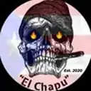

El Chapu PR
Marca de cigarro artesanal + tienda/taller · Toa Alta, Puerto Rico
El Chapu PR aparece en La Hoja Boricua, la guía de cigarros de artesanos boricuas, con 1 cigarro en el catálogo.

Marca de cigarro artesanal + tienda/taller · Toa Alta, Puerto Rico
El Chapu PR aparece en La Hoja Boricua, la guía de cigarros de artesanos boricuas, con 1 cigarro en el catálogo.